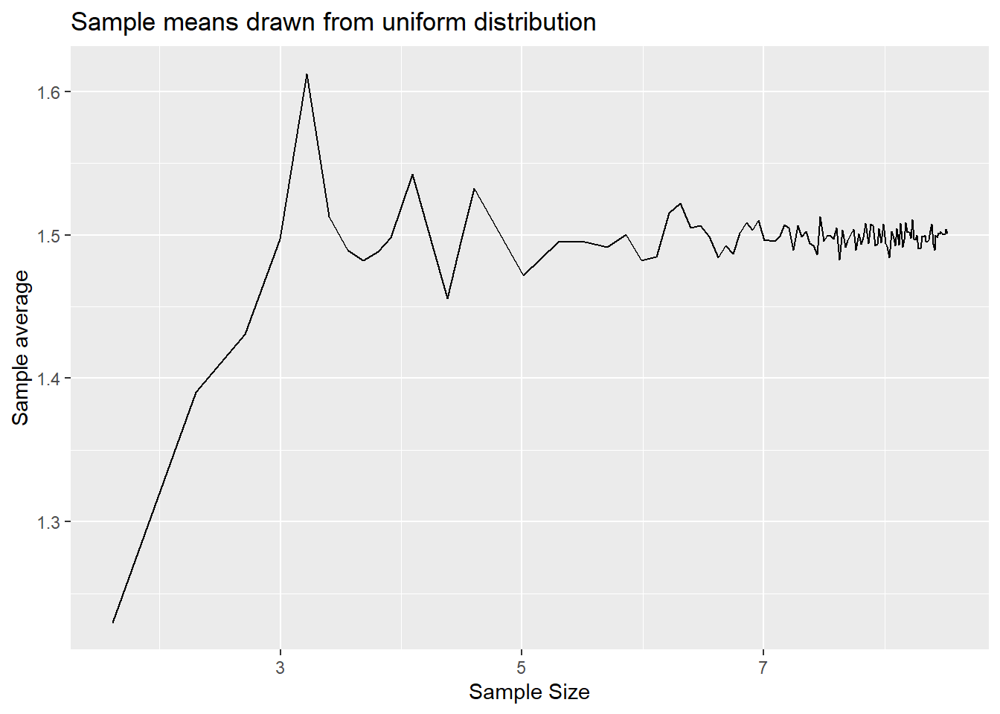
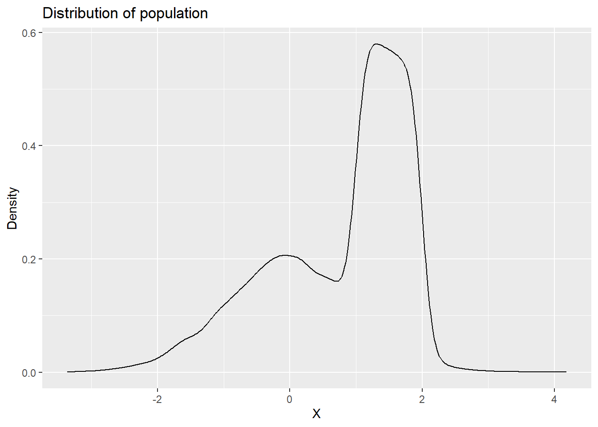
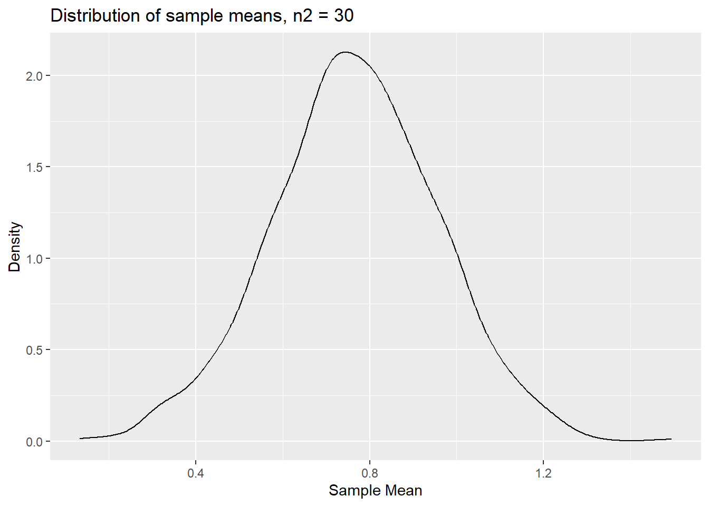
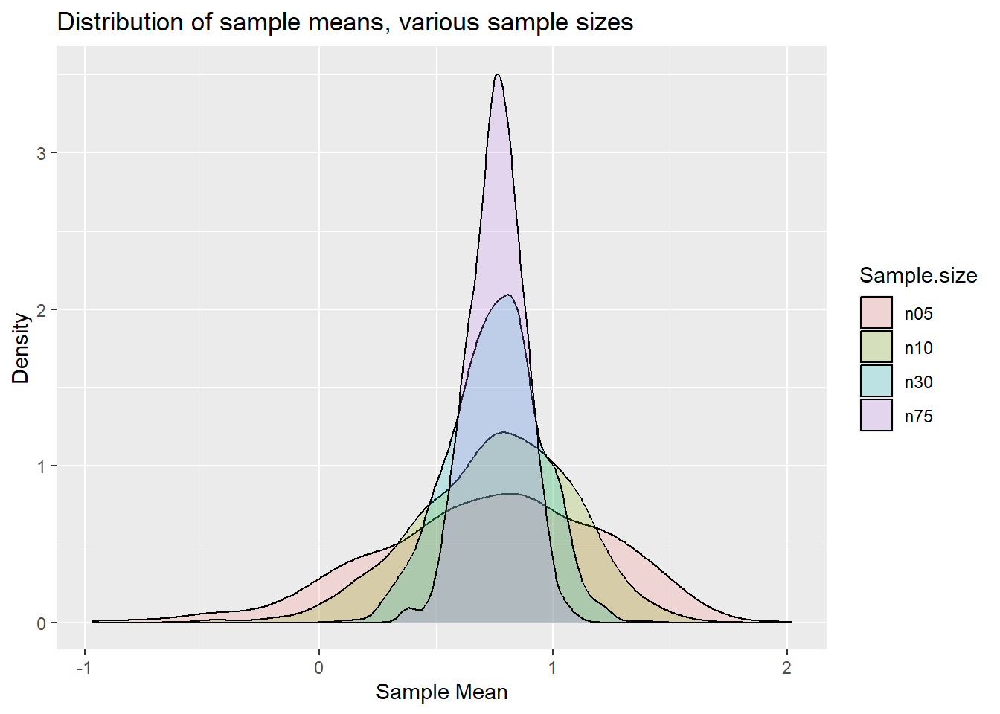
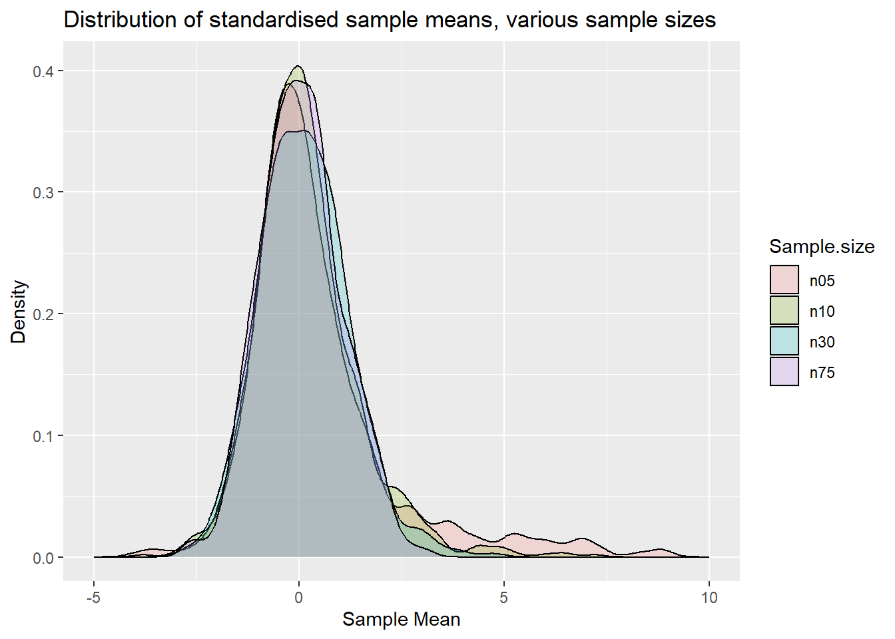

Demonstrating the LLN and CLT
2024-10-06
Here we wish to demonstrate the workings of the Law of Large Numbers (LLN) and the Central Limit Theorem (CLT).
Let’s load two packages we will be using.
library(tidyverse)
library(ggplot2)Law of Large Numbers (LLN)
The LLN indicates that if you have a random variable with a finite mean \(\mu_x\) and you take random draws from that population, then the sample mean \(\bar{X}=\frac{1}{n}\Sigma_i^n x_i\) will converge to the population mean \(\mu_x\).
In order to demonstrate this in a simulation we need to set a distribution from which we draw random numbers. Then we sample from the distribution and calculate a sample mean.
n <- 10
# set lower and upper bound for uniform
lb <- 1
ub <- 2
# set parameters for normal r.v.
mu <- 0
std <- 1
# raw random variables
x1 <- runif(n,lb,ub) # sampled from uniforn distribution between 1 and 2
x2 <- rnorm(n, mean=mu, sd=std) # sampled from normal distribution with mean 0 and sd = 1
mean1 <- mean(x1)
mean2 <- mean(x2)
paste("Sample 1 mean = ", mean1)## [1] "Sample 1 mean = 1.68596968108322"paste("Sample 2 mean = ", mean2)## [1] "Sample 2 mean = -0.115647585638028"As you can see the means are different from the respective population
means of 1.5 (for the uniform distribution drawing values between 1 and
2) and 0 (as set when we draw normally distributed random vaiables). The
LLN suggests that taken larger and larger samples (\(n \rightarrow \infty\)) should result in
sample means closer and closer to the population mean. So we need to
code a loop in which we increase the sample size n.
Let’s construct a range of increasing sample sizes between 5 and 5000.
n_sel1 <- seq(5,50,5)
n_sel2 <- seq(60,100,10)
n_sel3 <- seq(150,5000,50)
n_sel <- c(n_sel1,n_sel2,n_sel3)Now we have a range of increasing sample sizes and we shall draw random samples of increasing sizes, calculate their sample means and then observe how they behave.
# start by creating containers into which to save the sample means
save_mean1 = rep(NA,length(n_sel))
save_mean2 = rep(NA,length(n_sel))
for (i in (1:length(n_sel))) {
n <- n_sel[i]
save_mean1[i] <- mean(runif(n,lb,ub))
save_mean2[i] <- mean(rnorm(n, mean=mu, sd=std))
}Now we display the results. First we create a dataframe with the two series of sample means and the sample siz
results <- data.frame(n = n_sel, mean1 = save_mean1, mean2 = save_mean2 )Now we can plot using ggplot. By plotting sample mean
against the log of the sample size the effect becomes clearer. However
see how the result looks like if you plot against \[n\].
p1 <- ggplot(results, aes(x = log(n), y=mean1)) +
geom_line() +
labs(x = "Sample Size", y = "Sample average", title = "Sample means drawn from uniform distribution")
p1
p2 <- ggplot(results, aes(x = log(n), y=mean2)) +
geom_line() +
labs(x = "Sample Size", y = "Sample average", title = "Sample means drawn from normal distribution")
p2
You can see from here that the sample means do converge to the population means of 1.5 an 0 respectively. The variability around the population means does reduce as the sample size gets larger.
Central Limit Theorem (CLT)
CLTs basically indicate that, given certain conditions for the sequence of random numbers, \(X_i\) (or \(X_t\) when dealing with time series data), the sample mean of that sequence is a random variable and that variable is, for sufficiently large samples, normally distributed around the population mean \(mu_x\). The amazing feature of this is that the sample mean is asymptotically normally distributed regardless of what distribution the random variables \(X_i\) are drawn from. This is a key result that allows for statistical inference in many contexts.
In order to illustrate the workings of the CLT we will simulate a large population for \(X\). Then we shall draw random samples for different sample sizes. However, in contrast to the earlier illustration of the LLN, at every sample size we shall draw many samples of the same sample size, then calculate the sample mean for each of these samples and then display the distribution of these sample means, as that is the subject of the CLT.
Let’s start by creating a population of values. Our population shall be a mixture of the two distributions we used previously. 10,000 from the uniform distribution (between 1 and 2) and 10,000 from the normal distribution.
n <- 10000
# set lower bound for uniform
lb <- 1
ub <- 2
# set parameters for normal r.v.
mu <- 0
std <- 1
# raw random variables
x1 <- runif(n,lb,ub) # sampled from uniforn distribution between 1 and 2
x2 <- rnorm(n, mean=mu, sd=std) # sampled from normal distribution with mean 0 and sd = 1
Xpop <- append(x1,x2)Let’s look at a distribution for this population.
Xpop.df <- data.frame(x = Xpop)
p_denpop <- ggplot(Xpop.df,aes(x=x)) +
geom_density() +
labs(x = "X", y = "Density", title = "Distribution of population")
p_denpop
This a clearly unusual population. Let’s also calculate the population mean and standard deviation.
mu_x = mean(Xpop)
paste("Population mean =", mu_x)## [1] "Population mean = 0.744665429216517"# as sd calculates sample sd we correct to get pop sd
std_x = sd(Xpop)*((length(Xpop)-1)/length(Xpop))
paste("Population standard error =", std_x)## [1] "Population standard error = 1.0604009584022"Let’s start by using two sample sizes, n1=5 and
n2=30. We draw 1000 samples, calculate sample means and
then show the distribution of the resulting sequences of sample
means.
n1 <- 5
n2 <- 30
reps <- 1000
save_mean3 <- rep(NA,reps)
save_mean4 <- rep(NA,reps)
for (i in 1:reps) {
save_mean3[i] <- mean(sample(Xpop,n1)) # by default this samples without replacement
save_mean4[i] <- mean(sample(Xpop,n2))
}results.clt <- data.frame(sm1 = save_mean3, sm2 = save_mean4)
p_densm1 <- ggplot(results.clt,aes(x=sm1)) +
geom_density() +
labs(x = "Sample Mean", y = "Density", title = "Distribution of sample means, n1 = 5")
p_densm1The distribution is clearly not normal. In particular it seems
asymmetric, perhaps not surprising as the population distribution is
clearly asymmetric. Let’s see how this distribution looks like for
sample means calculated from samples of size n2 = 30.
results.clt <- data.frame(sm1 = save_mean3, sm2 = save_mean4)
p_densm2 <- ggplot(results.clt,aes(x=sm2)) +
geom_density() +
labs(x = "Sample Mean", y = "Density", title = "Distribution of sample means, n2 = 30")
p_densm2
We can clearly still see some asymmetry here, but less than for
n1=5.
Let’s generalise the code a little to be able to get distributions from more than just two sample sizes.
n_sel.clt <- c(5,10,30, 75)
reps <- 1000
# now the container in which we save results is a matrix
save_mean5 <- matrix(NA, nrow = reps, ncol = length(n_sel.clt))
for (j in (1:length(n_sel.clt))) {
n.clt <- n_sel.clt[j] # select a sample size
for (i in 1:reps) {
save_mean5[i,j] <- mean(sample(Xpop,n.clt)) # by default this samples without replacement
}
}The sample means from 4 x 1000 samples are now saved in
save_mean5. Each column contains the samples for one of the
sample sizes. To display the results nicely we should get the results
into a dataframe.
col_names <- c(sprintf("n%02d", n_sel.clt)) # this creates variable names
# this puts the cols of save_mean5 into a dataframe and adds the col_names
results.clt <- save_mean5 %>% data.frame() %>% setNames(col_names)To use the full power of ggplot it is best to create a
long dataframe. This means that we do not have a column/variable of
sample means for each sample size but that we have one column with
sample means but one extra variable which tells us what sample size each
particular sample mean comes from. This is done with the very powerful
pivot_longer function.
results.clt.long <- results.clt %>% pivot_longer(cols = starts_with("n"),
names_to = "Sample.size",
values_to = "sm")Compare results.clt and results.clt.long to
understand what this last line actually did.
Now we can apply a great visualisation to overlay multiple density plots (smoothed histograms).
p.clt <- ggplot(results.clt.long, aes(x=sm, fill=Sample.size)) +
geom_density(alpha=0.2) +
labs(x = "Sample Mean", y = "Density", title = "Distribution of sample means, various sample sizes")
p.clt
You can perhaps see that the distributions start looking more like a normal distribution for larger sample sizes.
However, the predominant aspect of the graph is that you can see the variance of the distributions decreasing as the sample size increases. What the CLT actually says is that the standardised sample mean is standard normally distributed. What this implies is that
\[\begin{equation} \frac{\bar{x}-\mu_X}{\sigma_{\bar{x}}} \end{equation}\]
is standard normally distributed and \(\sigma_{\bar{x}} = \sigma_{X}/\sqrt{n}\).
You will remember this from your statistics classes. We know what our
population mean (\(\mu_X\)) and
standard deviation (\(\sigma_X\)) are
as we calculated them above (mu_x and std_x).
So we can standardise.
In practice, you usually do not know \(\sigma_X\) and instead you use the sample standard deviation (\(s_x\)). You also don’t typically know the population mean, that value often comes from the hypothesis of a hypothesis test. The result being that we work with \(\frac{\bar{x}-\mu_x}{s_{X}/\sqrt{n}}\).
This standardised sample mean would be t-distributed with \(n=1\) degrees of freedom if \(X\) was normally distributed. In our case that is certainly not the case. However, the CLT will still apply and we should expect this, for sufficiently large \(n\), to be N(0,1).
Let us repeat the above experiment but rather than looking at the distribution of the sample means we look at the distribution of the standardised sample means as they should be comparable across different sample sizes.
n_sel.clt <- c(5,10,30, 75)
reps <- 1000
# now the container in which we save results is a matrix
save_mean6 <- matrix(NA, nrow = reps, ncol = length(n_sel.clt))
for (j in (1:length(n_sel.clt))) {
n.clt <- n_sel.clt[j] # select a sample size
for (i in 1:reps) {
x_sample <- sample(Xpop,n.clt)
xbar <- mean(x_sample)
s.x <- sd(x_sample)
s.xbar <- s.x/sqrt(n.clt)
save_mean6[i,j] <- ((xbar-mu_x)/s.xbar)
}
}
col_names <- c(sprintf("n%02d", n_sel.clt)) # this creates variable names
results.clt2 <- save_mean6 %>% data.frame() %>% setNames(col_names)
results.clt2.long <- results.clt2 %>% pivot_longer(cols = starts_with("n"),
names_to = "Sample.size",
values_to = "sm")p.clt2 <- ggplot(results.clt2.long, aes(x=sm, fill=Sample.size)) +
geom_density(alpha=0.2) +
xlim(-5, 10) +
labs(x = "Sample Mean", y = "Density", title = "Distribution of standardised sample means, various sample sizes")
p.clt2
If we were to overlay a normal distribution you would see that the distribution for n=75 is very close to a standard normal distribution (as a t distribution with 75-1 degrees of freedom is very close to a N(0,1)). In fact one may argue that the distribution for n=30 is already reasonably close to a normal distribution. For \(n=5\) and \(10\) we can still see clear asymmetries.
CLT in a regression context
The CLT basically tells you that a suitably scaled average is normally distributed if the sample size is sufficiently large. As it turns out, OLS regression coefficients are really exactly that, suitably scaled averages. Consider a simple regression model
\[\begin{equation} y_i = \alpha + \beta x_i + u_i \end{equation}\]
You will also remember the following formula for the OLS estimator for the slope coefficient \(\beta\):
\[\begin{equation} \hat{\beta}= \frac{Cov(y_i,x_i)}{Var(x_i)} \end{equation}\]
It turns out that this is just “a suitably scaled average”.
\[\begin{equation} \hat{\beta}= \frac{\frac{1}{n}\Sigma_{i=1}^{n}(y_i-\bar{y})(x_i-\bar{x})}{Var(x_i)} = Var(x_i)^{-1}\frac{1}{n}\Sigma_{i=1}^{n}(y_i-\bar{y})(x_i-\bar{x}) \end{equation}\]
It is the average of \((y_i-\bar{y})(x_i-\bar{x})\) that is being calculated (and then divided by a variance term).
Let’s demonstrate how the CLT works in this context. We begin by simulating pairs of \({y_i,x_i}\) that come from a true regression model. In practice you will not have the luxury of observing this.
# set lower and upper bound for x
lb <- 1
ub <- 10
# set parameters for normal r.v. for error term
mu <- 0
std <- 1
# We simulate a large population
n <- 1000000
# raw random variables
x <- runif(n,lb,ub) # sampled from uniforn distribution between 1 and 10
u <- rnorm(n, mean=mu, sd=std) # sampled from normal distribution with mean 0 and sd = 1
# now we set the model parameters
alpha <- -3
beta <- 0.7
# now calculate the Y values
y <- alpha + beta * x + uNow we need to draw repeated samples of \({y_i,x_i}\) pairs from this population of data. For each of the samples we shall estimate a regression from which we get \(\hat{\beta}\) and \(se(\hat{\beta})\) from which we then calculate
\[\begin{equation} \frac{\hat{\beta}-\beta}{se(\hat{\beta})} \end{equation}\]
Recall that \(\hat{\beta}\) is basically an average which is then (suitably) scaled by \(se(\hat{\beta})\). This is also what we call the t-test if we were to test the null hypothesis that the coefficient was equal to \(\beta\) (which in this case we know to be true). For illustration purposes we continue with this simple regression model but the ideas continue to apply for multiple regressions.
n_sel.clt <- c(5,10,30, 75)
reps <- 1000
# now the container in which we save results is a matrix
save_mean7 <- matrix(NA, nrow = reps, ncol = length(n_sel.clt))
for (j in (1:length(n_sel.clt))) {
n.clt <- n_sel.clt[j] # select a sample size
for (i in 1:reps) {
selobs <- sample(1:length(y),n.clt) # samples n.clt observations, these are the obs numbers
x_sample <- x[selobs] # ensures that same obs are sampled from x and y
y_sample <- y[selobs]
OLS.clt <- lm(y_sample~x_sample)
sOLS.clt <- summary(OLS.clt) # save regression results, makes coefficient estimates and their se available
betahat <- sOLS.clt$coefficients["x_sample", "Estimate"]
sebetahat <- sOLS.clt$coefficients["x_sample", "Std. Error"]
save_mean7[i,j] <- ((betahat-beta)/sebetahat)
}
}
col_names <- c(sprintf("n%02d", n_sel.clt)) # this creates variable names
results.clt3 <- save_mean7 %>% data.frame() %>% setNames(col_names)
results.clt3.long <- results.clt3 %>% pivot_longer(cols = starts_with("n"),
names_to = "Sample.size",
values_to = "sm")p.clt3 <- ggplot(results.clt3.long, aes(x=sm, fill=Sample.size)) +
geom_density(alpha=0.2) +
xlim(-5, 10) +
labs(x = "Sample Mean", y = "Density", title = "Distribution of t-test in regression, various sample sizes")
p.clt3Qualitatively you can see the same result as for the standardised sample mean earlier. That is now not a surprise any more as the OLS coefficient estimate in a linear regression model is really nothing else but a sample estimate.